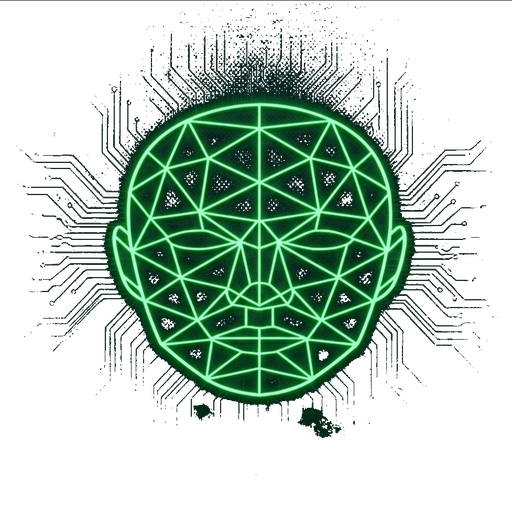

Cada quants segons s'envien les dades a la micro:bit per Bluetooth. Valors baixos (0.1-0.3s) donen més fluïdesa però consumeixen més bateria.
JFace utilitza MediaPipe Face Mesh de Google per detectar la posició del cap, l'obertura de la boca i l'estat dels ulls en temps real, i envia aquestes dades a una micro:bit per Bluetooth.
Format de dades enviades (6 dígits):
Exemple: 731010 → cap a 73°, boca 10% oberta, ull esquerre obert, dret tancat.
Quan la cara desapareix de pla, s'envia 0 una sola vegada.
Tot el processament es fa localment al navegador sense enviar cap dada a Internet.